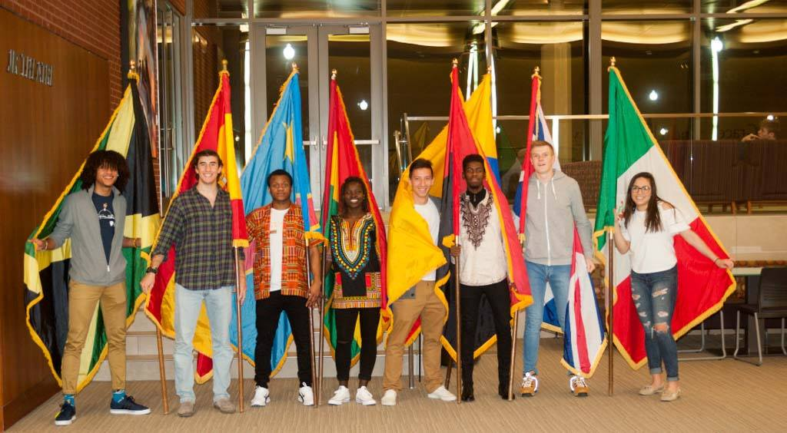
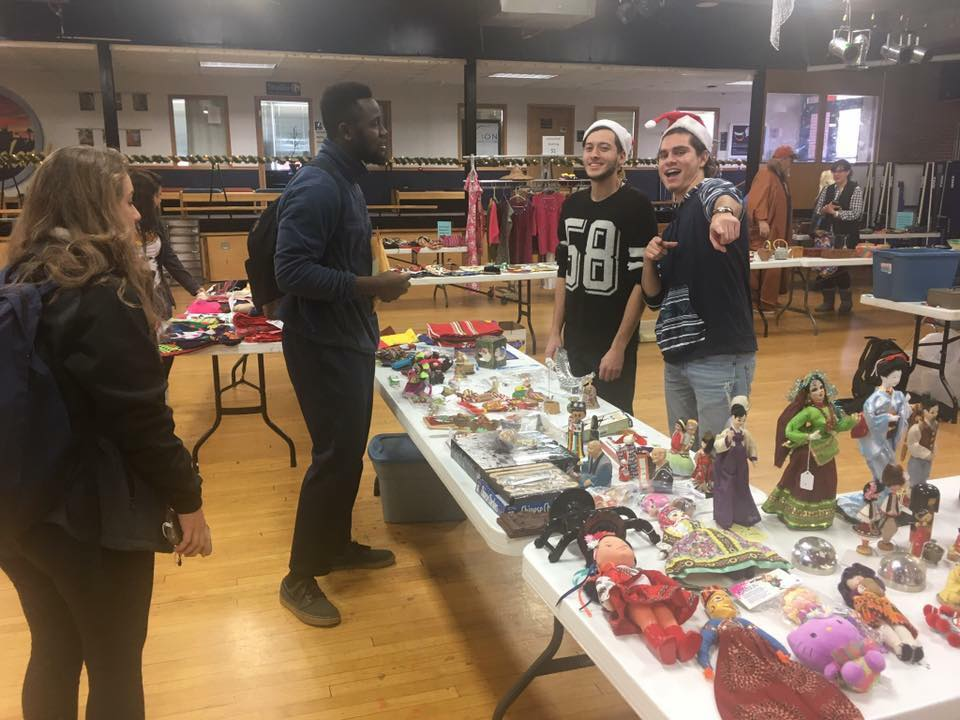
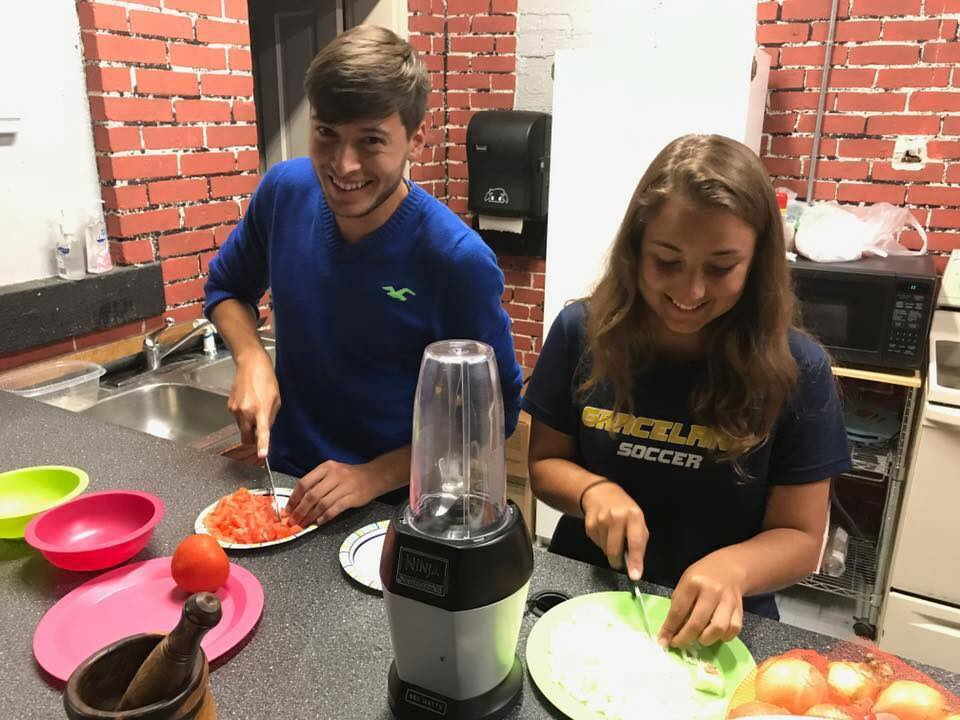

Cultural celebration is when differnt students come together bringing some type of dish that is originated from their home town.They bring enough so that student and the community can come and learn and enjoy themselves.
Intercultral Night

The international students put together a show where they present a cutural dance that they learn from where ever their home is they bring the flags out and show their talents. Mostly all flag are represented but all contries have some different talent that they display.
International Silent Auction

The international students gather things from thir culture and they sell them in the MSC they bring differnt things from toys, jewlrey and sometimes even candy. It is an event where you can come look and differnt items and maybe make a purchase to anything that is appealing to you.
International Cooking

The international club has an events where they choose a country and they show you how to make some type of food or snack from their country.This year it was Puerto Rico above is a picture of Brayam and Mariana Cooking.